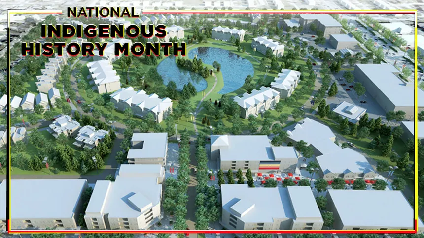

Kapyong Barracks
The kapyong Barracks is a former military base located in Winnipeg,
Manitoba. It has a rich history and is now a reserve for Indigenous
peoples in the area. The indigenous
Today, the government provides reserves for indigenous people just
like they promised. There are self-governed education programs and
Indigenous peoples history is being taught around schools. At the
site of the former Kapyong Barracks (now named Naawi-Oodena), the
seven treaty one nations are turning that urban reserve into a
cultural and economic hub for the city of Winnipeg where people can
go and celebrate indigenous culture. The project started in April
2024.
